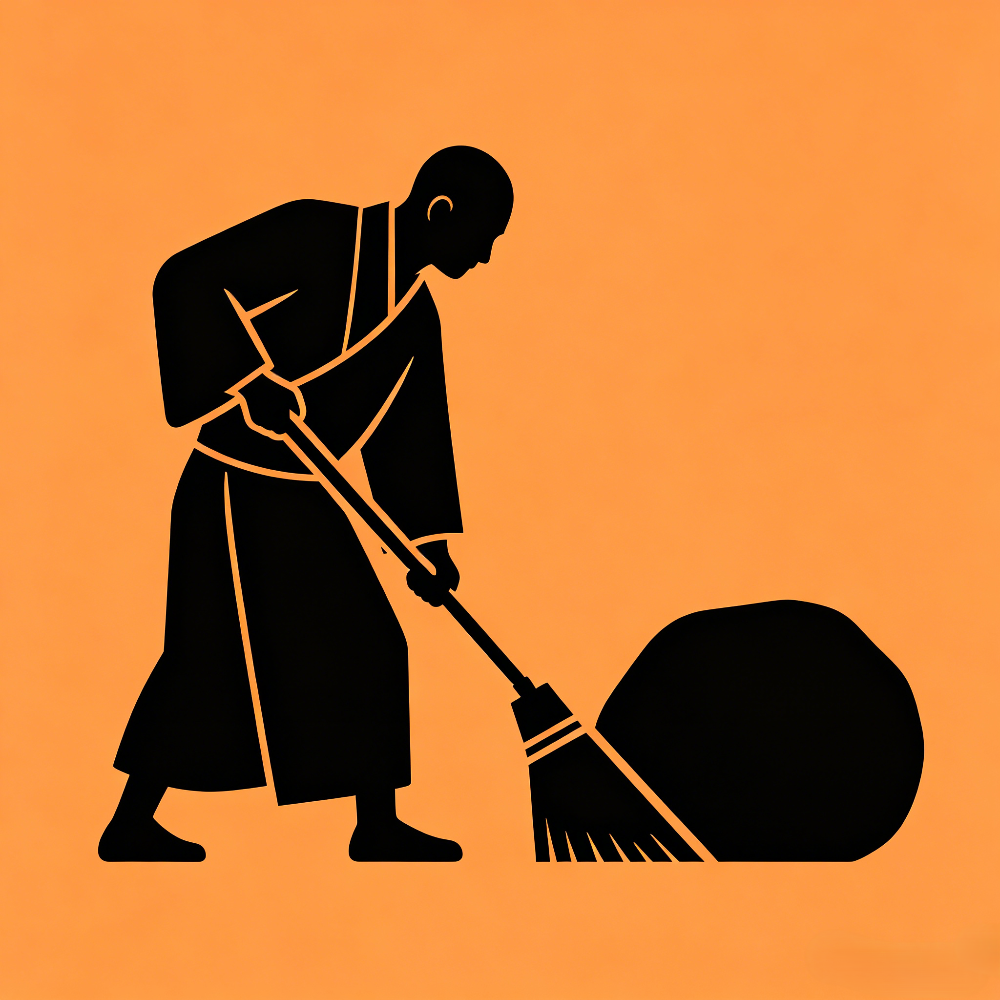

| L1 初级 | 点击横线逐个认字，适合初读 |
| L2 中级 | 输入拼音首字母揭示汉字 |
| L3 高级 | 全文默写+核对对比，正确率≥60% 才打 ✓ |
连续点击「背诵」按钮可循环切换 L1→L2→L3 · 仅 L3 默写达标（≥60%）后边栏才标记 ✓
| 📖 正文 | 原文阅读，按方向键翻篇 |
| 🔍 名句 | 名句高亮显示，聚焦精华 |
| ✏️ 填空 | 随机挖空30%，点击查看答案 |
| 💡 注释 | 创作背景与名句赏析 |
| 📋 笔记 | 记录学习心得 |
与《道德经》共用同一套 01–81 数字桩：篇号 → 联想词 + Emoji（如 1 蜡烛🕯️、10 棒球⚾）。目录、标题、放大镜均可看到，方便用记忆宫殿定位篇目。
大字号全屏阅读模式，支持左右箭头键翻篇，按 Esc 或点击关闭按钮退出。